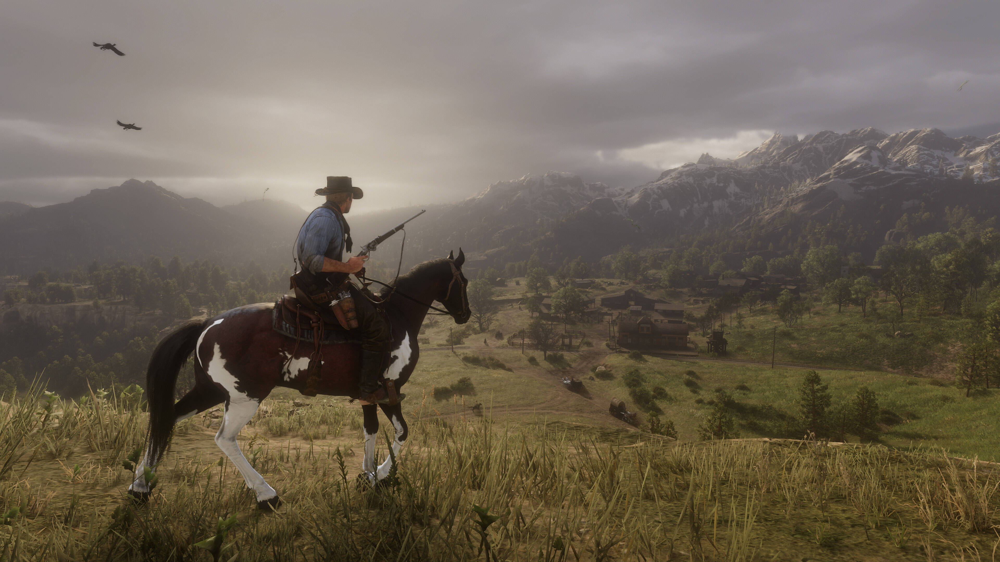
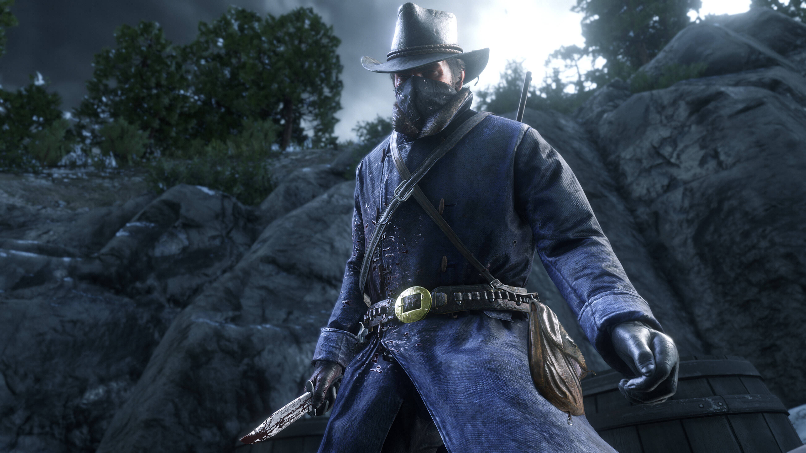
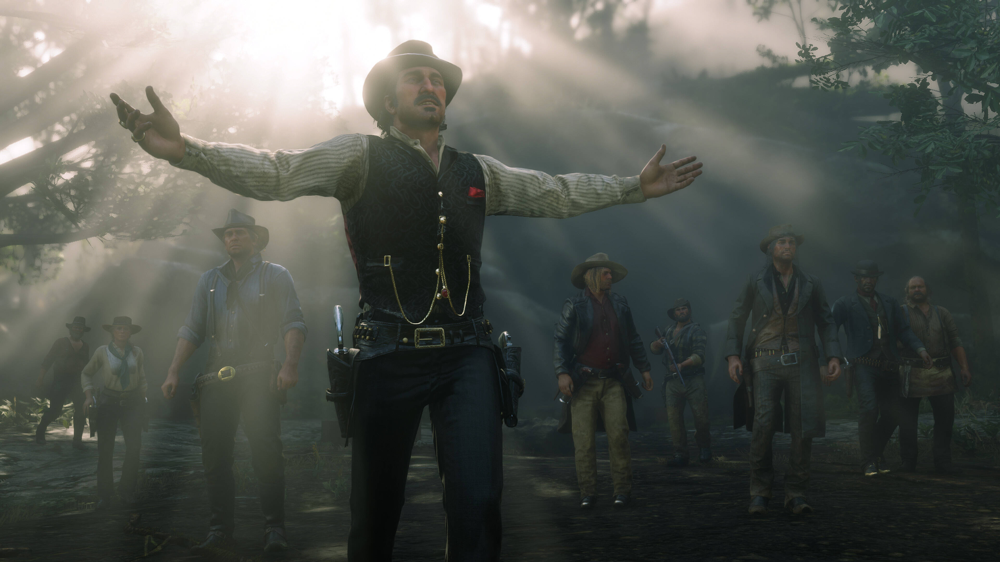

Red Dead Redemption 2 для PC может похвастаться рядом графических и технических усовершенствований, благодаря которым история Артура Моргана и банды Ван дер Линде, спасающихся от служителей закона в Америке на закате XIX века, заиграет новыми красками.

Red Dead Redemption 2 для PC задействует всю мощь современных компьютеров, чтобы максимально правдоподобно представить каждый уголок этого огромного, насыщенного деталями мира, будь то заснеженные склоны гор Гризли, пыльные дороги Лемойна, заляпанные грязью витрины Валентайна или булыжные мостовые Сен-Дени. Среди графических и технических усовершенствований, представленных в PC-версии, – увеличенная дальность прорисовки, облегчающая навигацию; улучшения в системе глобального освещения и рассеянного затенения, обеспечивающие более реалистичную смену времени суток; высококачественные следы на снегу, улучшенные отражения и более глубокие тени на всех расстояниях; тесселяция текстур древесной коры и более качественные текстуры травы и меха, за счет чего животные и растения смотрятся еще натуралистичнее.

Кроме того, Red Dead Redemption 2 для PC поддерживает HDR, разрешение 4K и выше, конфигурации с несколькими мониторами, широкоэкранные мониторы, более высокую частоту кадров и не только.

На этой странице представлены снимки экрана в высоком разрешении, сделанные в PC-версии Red Dead Redemption 2 (щелкните по картинке, чтобы открыть полноразмерную версию), а ниже вы можете ознакомиться с системными требованиями игры и важными примечаниями.

В дополнение к техническим усовершенствованиям Red Dead Redemption 2 для PC может похвастаться рядом нововведений в сюжетном режиме.
Новое оружие в сюжетном режиме, в том числе:
- Пистолет M1899 - новый полуавтоматический пистолет магазинного типа
- Карабин Эванса - карабин с вместительным магазином (ранее был доступен только в Red Dead Online)
- Револьвер азартного игрока - украшенный резьбой самовзводный револьвер (ранее был доступен только в Red Dead Online)
- Револьвер Ле Ма - мощный револьвер, из которого также можно стрелять дробью (ранее был доступен только в Red Dead Online)